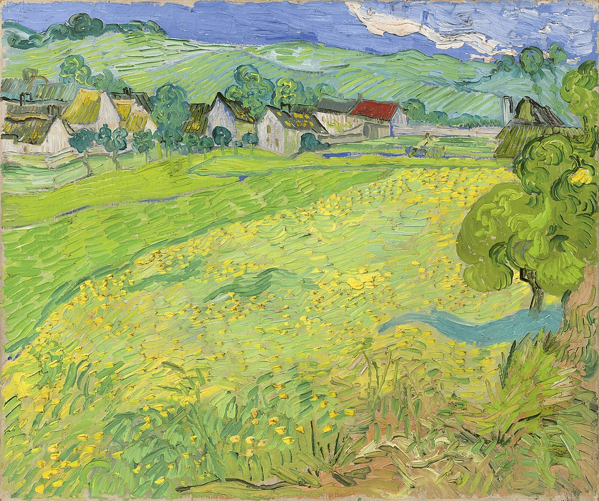

<head>
<meta charset="UTF-8" />
<meta name="keywords" content="drawing, painting" />
<meta name="description" content="drawings by Sunjy" />
<title>Sunjy</title>
<link rel="shortcut icon" type="image/x-icon" href="../../mImages/mCommon/favicon.ico" media="screen" />
<link rel="stylesheet" type="text/css" href="../../mCsses/mCommon/mCssA.css" />
<link rel="stylesheet" type="text/css" href="../../mCsses/mCommon/mCssB.css" />
<link rel="stylesheet" type="text/css" href="../../mCsses/mCommon/mCssC.css" />
<link rel="stylesheet" type="text/css" href="../../mCsses/mCommon/mCssD.css" />
<link rel="stylesheet" type="text/css" href="../../mCsses/mContent/mCssA.css" />
<link rel="stylesheet" type="text/css" href="../../mCsses/mContent/mCssB.css" />
<link rel="stylesheet" type="text/css" href="../../mCsses/mContent/mCssC.css" />
<link rel="stylesheet" type="text/css" href="../../mCsses/mContent/mCssD.css" />
</head>
<script type="text/javascript" src="../../mScripts/mContent/mContentAA.js" /></script>
<script type="text/javascript" src="../../mScripts/mContent/mContentAB.js" /></script>
<script type="text/javascript" src="../../mScripts/mContent/mContentAC.js" /></script>
<script type="text/javascript" src="../../mScripts/mContent/mContentAD.js" /></script>
<script type="text/javascript"></script> 
<script type="text/javascript">
document.write('<div class="mImgAbsolute"></div>');
/*
document.write('<p class="mFontSizeBColor" />From a white paper...</p>');
document.write('<table class="center"><tr><td>');
document.write('');
document.write('</td></tr></table>');
*/
</script>


<script type="text/javascript">
document.write('<p class="mFontSizeBColor" />View of Vessenots Near Auvers</p>');
document.write('<p class="mFontSizeSColor" />“View of Vessenots Near Auvers” by Vincent van Gogh depicts the landscape of ‘Les Vessenots,’ on the outskirts of Auvers. Van Gogh shows a village of country cottages with thatched roofs placed just below a raised horizon in the background.<br><br>In the foreground, wheat fields dominate the composition with swaying trees on the borders. The bright greens and yellows applied with thick brushstrokes follow a repetitive, undulating rhythm, which was characteristic of van Gogh’s final works.<br><br>Van Gogh painted many landscapes in the weeks before his death; he was always working outdoors. The expanses of fertile fields gave him a sense of freedom, but at the same time, he felt a melancholy and loneliness.<br><br>Van Gogh painted his landscapes from life, but he shows us a personal view by creating a new and unique visual form for the impressions that he saw.<br><br>In May 1890, Vincent van Gogh traveled to a small village thirty-five kilometers north of Paris where Doctor Paul-Ferdinand Gachet, the physician, and art collector, lived. <br><br>Theo van Gogh, the artist’s brother, had entrusted the care of his brother to the doctor at the recommendation of Camille Pissarro. <br><br>Despite lasting scarcely two months, the Auvers period was extremely productive. During what would the last weeks of his life, Vincent painted several portraits and many landscapes.<br><br>It would be one of these cornfields that he painted during his final weeks were, Van Gogh, is mysteriously shot on the morning of 27 July 1890.<br><br>In his last letter to his brother, he wrote that he always retained a glimmer of hope in his art:<br><br>“The truth is we can only make our pictures speak.”<br><br>Doctor Paul-Ferdinand Gachet was the first owner of this painting.<br></p>');
document.write('<table class="center" /><tr><td>');
document.write('<br>In the foreground, wheat fields dominate the composition with swaying trees on the borders. The bright greens and yellows applied with thick brushstrokes follow a repetitive, undulating rhythm, which was characteristic of van Gogh’s final works.<br><br>Van Gogh painted many landscapes in the weeks before his death; he was always working outdoors. The expanses of fertile fields gave him a sense of freedom, but at the same time, he felt a melancholy and loneliness.<br><br>Van Gogh painted his landscapes from life, but he shows us a personal view by creating a new and unique visual form for the impressions that he saw.<br><br>In May 1890, Vincent van Gogh traveled to a small village thirty-five kilometers north of Paris where Doctor Paul-Ferdinand Gachet, the physician, and art collector, lived. <br><br>Theo van Gogh, the artist’s brother, had entrusted the care of his brother to the doctor at the recommendation of Camille Pissarro. <br><br>Despite lasting scarcely two months, the Auvers period was extremely productive. During what would the last weeks of his life, Vincent painted several portraits and many landscapes.<br><br>It would be one of these cornfields that he painted during his final weeks were, Van Gogh, is mysteriously shot on the morning of 27 July 1890.<br><br>In his last letter to his brother, he wrote that he always retained a glimmer of hope in his art:<br><br>“The truth is we can only make our pictures speak.”<br><br>Doctor Paul-Ferdinand Gachet was the first owner of this painting.<br>" />');
document.write('</td></tr></table>');
</script>


